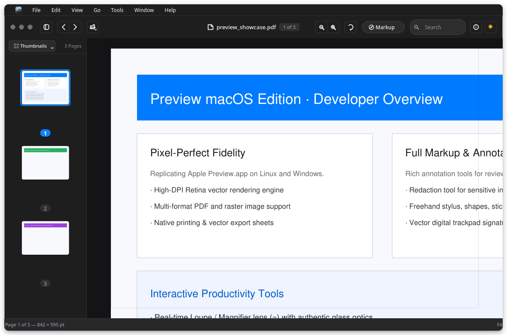

macOS Preview, on Linux and Windows.
Fast, native PDF and image viewer with annotation, signing, redaction and more.

Get Preview for your operating system.
Standalone native desktop binaries and universal source packages. Clean, offline, and ready to use.
Ubuntu / Debian / Kali / Mint
Native package with desktop launcher entry, MIME type file associations, and system theme integration.
Windows 10 / 11
Standard Windows setup wizard with Start menu shortcuts, shell context menu entry, and High-DPI screen support.
Silent install flag: /SILENT
From Source
Run directly with virtual environment. Ideal for developers and custom distro environments.
Version 1.7.2 production packages ready for download.
Built for precision document work.
Every essential tool from Apple's Preview application, faithfully recreated with native performance.
Universal Document & Image Engine
Crisp Multi-Page PDF Rendering
High-speed vector rasterization powered by PyMuPDF and MuPDF. Fluid page scrolling with fractional antialiasing.
Broad Format Support
Native decoding for PNG, JPEG, WebP, GIF, BMP, TIFF, and ICO formats with color management.
Smooth Zoom 10% to 1000%
Centric zooming via mouse wheel, trackpad gestures, or hotkeys with actual-size and fit-to-window modes.
Collapsible Thumbnail Sidebar
Reorder pages via drag-and-drop, duplicate pages, rotate individual orientations, and delete unwanted sheets.
Live PDF Text Search
Instant full-text query with match counters, yellow highlights, and keyboard navigation between search hits.
Markup & Annotation Suite
Redaction (Blackout) Tool
Permanently excises sensitive text strings and vector glyphs from the document stream. Safe and irreversible.
Pen & Translucent Highlighter
Freehand drawing with smooth bezier curve interpolation, adjustable stroke widths, and blending highlighter pens.
Vector Geometric Shapes
Insert rectangles, rounded rectangles, ovals, straight lines, and pointing arrows with customizable stroke and fill colors.
Text Boxes & Sticky Notes
Overlay typography with custom font families and colors, plus classic macOS yellow Post-it notes.
Digital Signature Pad
Capture clean handwritten signatures with transparent alpha backgrounds. Save signatures in your local library for re-use.
Marquee Select & Crop
Select rectangular bounding regions on images and PDFs to crop losslessly with Ctrl+K.
Precision Productivity Tools
Optical Loupe Lens
Summon a circular glass reticle with the tilde hotkey (~) for real-time 2x to 8x magnification of vector curves.
Fullscreen Slideshow Mode
Distraction-free presentation view for multi-page documents and photos with F11.
Live Text Extraction
Extract all text content from the current page directly to your system clipboard with Ctrl+Shift+C.
Native Print & Print Preview
Direct integration with CUPS on Linux and the Windows Spooler with paper size, margins, and DPI selection.
Advanced Export Sheet
Export individual pages or entire documents with target DPI overrides, JPEG quality sliders, and format transcoding.
Metadata Inspector Window
View document security permissions, PDF producer information, image DPI, and camera EXIF data with Ctrl+I.
Pro Image Adjustment Lab & Auto Updater
Adjust Color & RGB Histogram
Real-time RGB curves with controls for exposure, contrast, highlights, shadows, saturation, temperature, tint, sharpness, and auto levels.
Adjust Size & Resolution
Scale images by pixel dimensions, percentage, or physical print units with aspect ratio locking and custom resampling filters.
Sparkle-Style In-App Updater
Background GitHub release checking, download progress bar, and one-click reinstall and relaunch mechanism.
A faithful reconstruction in action.
Click any preview below to explore the dark and light interface, markup tools, color adjustment lab, and in-app updater.
How Preview compares with standard viewers.
A direct feature matrix comparing Preview against Linux desktop document tools and macOS native Preview.
| Capability | Preview (this app) | macOS Preview | Evince | Okular | Eye of GNOME |
|---|---|---|---|---|---|
| macOS Sequoia Unified UI | ✓ Native Qt6 | ✓ Yes | ✗ GNOME HIG | ✗ KDE Breeze | ✗ GNOME HIG |
| Multi-page PDF & Image Support | ✓ Full unified | ✓ Full unified | ✓ PDFs only | ✓ PDFs mainly | ✗ Images only |
| Permanent Redaction (Blackout) | ✓ Strip glyphs | ✓ Built-in | ✗ No | ✗ No | ✗ No |
| Digital Signature Pad | ✓ Saved library | ✓ Trackpad/Cam | ✗ No | ✗ Certificate only | ✗ No |
| Optical Loupe Lens | ✓ 2x to 8x (~) | ✓ Built-in | ✗ No | ✓ Magnifier tool | ✗ No |
| Live RGB Histogram | ✓ Real-time | ✓ Built-in | ✗ No | ✗ No | ✗ No |
| Proportional Resize Presets | ✓ DPI & Presets | ✓ Built-in | ✗ No | ✗ No | ✗ No |
| Sticky Notes & Vector Shapes | ✓ Full vector suite | ✓ Full suite | ✗ Basic text note | ✓ Annotations | ✗ No |
| Fullscreen Slideshow | ✓ F11 clean | ✓ Built-in | ✓ Presentation | ✓ Presentation | ✓ Slideshow |
| Sparkle-style Auto Updater | ✓ In-app 1-click | ✓ macOS Update | ✗ Package manager | ✗ Package manager | ✗ Package manager |
| Cross-Platform (Linux & Windows) | ✓ Linux & Win | ✗ macOS only | ✗ Linux mainly | ✓ Cross-platform | ✗ Linux only |
Built for keyboard speed.
Search or filter through the complete shortcut library implemented across the application.
Under the hood.
A clean Python architecture decoupled into core document logic and responsive Qt UI layers.
Frequently asked questions.
Factual answers regarding licensing, security, offline usage, and platforms.
Contributing & Open Source.
Preview is an open-source collaboration. Contributions, bug reports, and improvements are welcome.
Report bugs, view active discussions, or propose new features.
Code style, pull request workflow, and local test instructions.
Vulnerability reporting guidelines and responsible disclosure.
Structured templates for bug reports and feature requests.